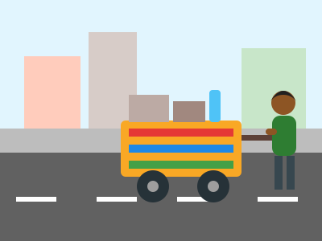

Cataki
Reciclagem · Tecnologia
Aplicativo criado pelo movimento Pimp My Carroça que conecta quem tem material reciclável em casa com catadores da região. Assim o catador recebe pelo serviço e o material não vai para o lixo comum.
Saiba mais no Brasil de Fato (abre em nova aba)